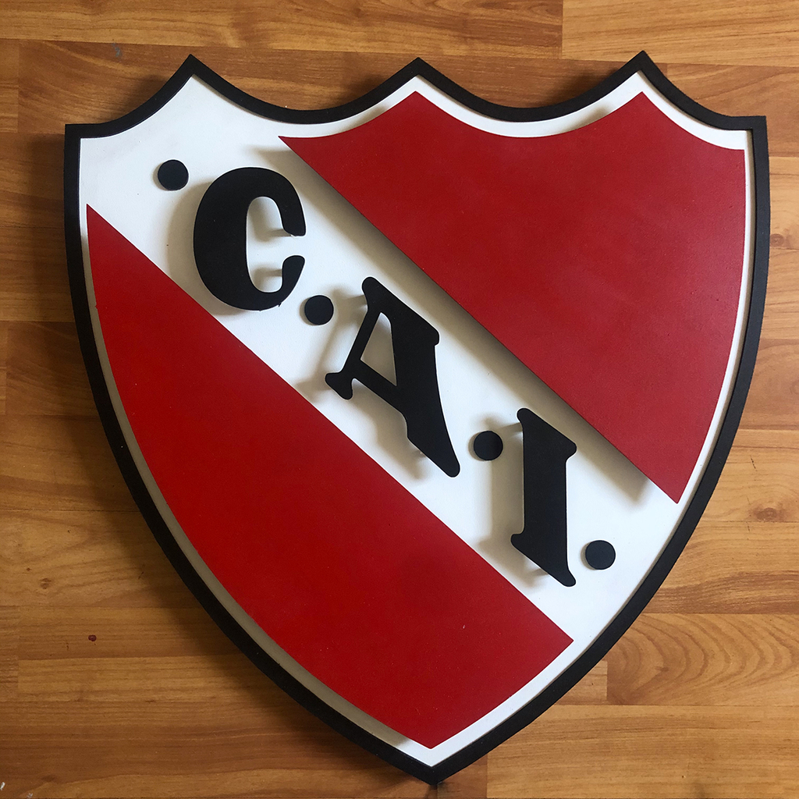
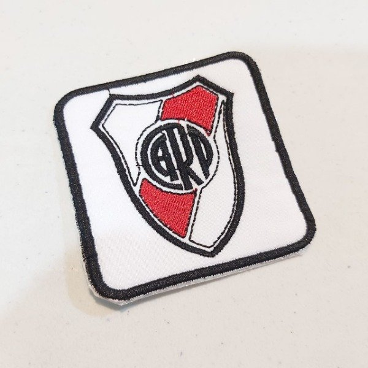

Edición limitada • Inspirado en la tradición
 Escudo goma • 7 cm
Escudo goma • 7 cm
Mini escudos argentinos — la pasión en la palma de tu mano
Escudos de goma, madera o tela bordada en venta, fabricados de manera artesanal. Perfectos para colecciones, regalos y decoraciones.
Tamaños: 4–12 cm
Materiales: Goma, madera o tela

Escudo madera • 12 cm
Escudo goma • 7 cm

Escudo tela • 5 cm
✔ Envíos a toda la provincia de Misiones
✔ Producción responsable
✔ Calidad garantizada